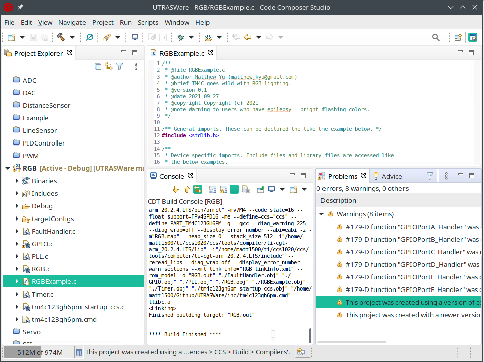
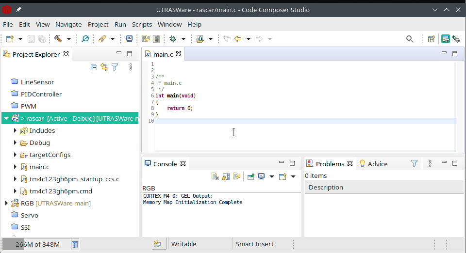
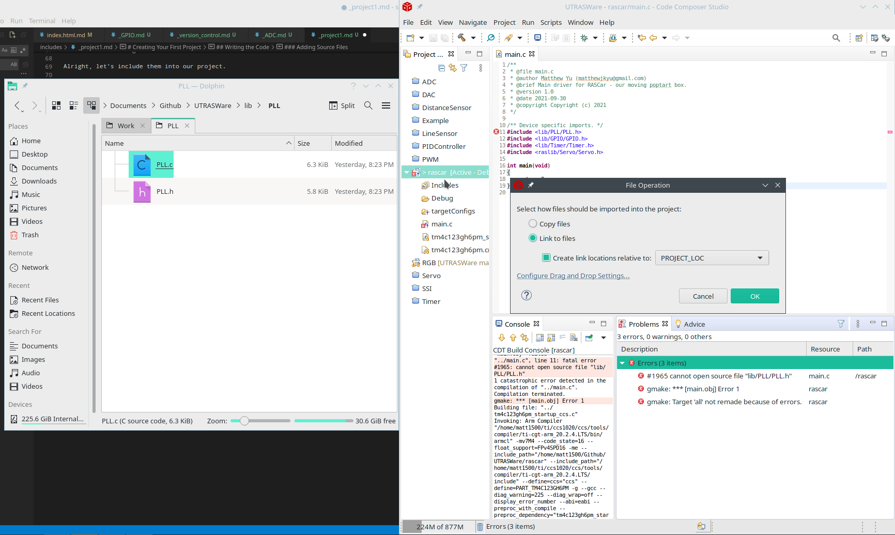
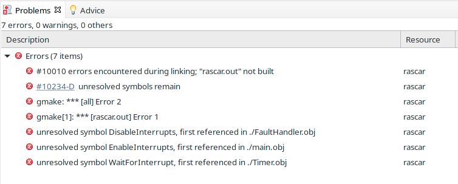

Introduction
Welcome to the Robotathon UTRASware documentation!
Here, you'll find programming tutorials, spanning the peripherals of the TM4C and for various devices that are used as sensors and actuators for your robot.
Contributors
- Matthew Yu (matthewjkyu@gmail.com)
- Dario Jimenez
Copyright
Copyright 2021 Matthew Yu
Permission is hereby granted, free of charge, to any person obtaining a copy of this software and associated documentation files (the "Software"), to deal in the Software without restriction, including without limitation the rights to use, copy, modify, merge, publish, distribute, sublicense, and/or sell copies of the Software, and to permit persons to whom the Software is furnished to do so, subject to the following conditions:
The above copyright notice and this permission notice shall be included in all copies or substantial portions of the Software.
THE SOFTWARE IS PROVIDED "AS IS", WITHOUT WARRANTY OF ANY KIND, EXPRESS OR IMPLIED, INCLUDING BUT NOT LIMITED TO THE WARRANTIES OF MERCHANTABILITY, FITNESS FOR A PARTICULAR PURPOSE AND NONINFRINGEMENT. IN NO EVENT SHALL THE AUTHORS OR COPYRIGHT HOLDERS BE LIABLE FOR ANY CLAIM, DAMAGES OR OTHER LIABILITY, WHETHER IN AN ACTION OF CONTRACT, TORT OR OTHERWISE, ARISING FROM, OUT OF OR IN CONNECTION WITH THE SOFTWARE OR THE USE OR OTHER DEALINGS IN THE SOFTWARE.
Setup
These drivers have been built with the Keil (pronounced kill in kill me) and
Code Composer Studio (CCS) IDEs in mind. Officially, RAS supports CCS, but
example projects have been built for both platforms.
Installing Git
"Git is a free and open source [FOSS] distributed version control system" designed for managing projects and files of all types. Git is particularly used in programming to help students and professionals manage their code and collaborate with other people across the internet.
You can install git either manually to use via CLI (a.k.a Powershell, bash, zsh, etc) or with a third party GUI. For the latter, we recommend GitHub Desktop, which works for both macOS and Windows.
A tutorial for Github Desktop can be found here. For CLI users who want to learn git commands, here's a simple visual guide and Github's Git cheatsheet.
Creating a Github Account
The next thing to do is to create your own Github account. Github is a remote server application that stores your code and allows you to collaborate with others. For many people, Github can also be used to store your projects between machines, advertise your portfolio to companies, and to host your own website for free.
Downloading the RASware repository
After you create your Github account, then you can download RASware onto your computer to begin playing with it.
Command line users can clone the repository with the URL
https://github.com/ut-ras/UTRASWare.git.
Github Desktop
Github Desktop users can take the RASware url and go to the Code -> Open with GitHub Desktop button. Here's the specific tutorial guide to get you going.
CCS (Windows/Mac/Linux)
Now that your repository has been cloned (preferable in a place you know, such
as C:/users/xxx/Documents/Github or ~/Documents/Github), it's time to
install CCS.
Here's the CCS install tutorial, and here is the download page.
Alt:Keil (Windows)
Those looking to install Keil (pronounced kill as in kill me), can follow
Professor Valvano's guide for
setting it up.
Running A Demo Project
Let's start off with a fun example project to flash with to the TM4C. We'll be flashing the RGB project in UTRASWare/rasexamples/RGB with CCS.
Setup
1) Import projects from UTRASWare.

2) Select the directory that has your UTRASWare project.

3) Select the specific project you want to import (or select all of them, you'll need them later on).

4) Click finish! The projects will load on the sidebar.

A couple things to notice here:
- The project viewer on the left side: this shows your projects in your workspace, and within each project are all the files needed to build and run your project. These project are typically .c files, or implementation files. The build system uses File > Properties > Build > Include Options to search for the relevant header files which defines functions and links them together into a single binary.
- The file viewer on the right side: This shows the code inside of each of your files. You write your code here!
- Build/Compile button. Whenever you want to test your code, the first thing to do is compile it, and check for any errors!
- Errors will show up in the Compiler and debug view on the bottom. It'll show syntax errors or warnings, and so forth.
- Once your project compiles successfully, you can press either the Flash or Debug button. The former directly writes the compiled program to your TM4C, and the other writes the compiled program, then enters it so you can step through the program execution.
5) After building the program, here is what a successful build output should
look like. A *.out file is generated in a local Binaries folder, and this
is the machine code that the TM4C reads.

6) Now we press the flash button... And then your TM4C should now spurt out rainbow colors at the LEDs next to your reset switch!
Code Structure
RGBExample.c
/**
* (1)
* @file RGBExample.c
* @author Matthew Yu (matthewjkyu@gmail.com)
* @brief TM4C goes wild with RGB lighting.
* @version 0.1
* @date 2021-09-27
* @copyright Copyright (c) 2021
* @note Warning to users who have epilepsy - bright flashing colors.
*/
/** (2) General imports. */
#include <stdlib.h>
/** (3) Device specific imports. */
#include <lib/PLL/PLL.h>
#include <raslib/RGB/RGB.h>
/* (4) */
void EnableInterrupts(void); // Defined in startup.s
void DisableInterrupts(void); // Defined in startup.s
void WaitForInterrupt(void); // Defined in startup.s
/* (5) */
int main(void) {
/* (6) */
PLLInit(BUS_80_MHZ);
/* (7) */
DisableInterrupts();
/* (8) Initialize the RGB LEDs! */
RGBInit();
/* (9) */
EnableInterrupts();
/* (10) */
while(1) {
/* (11) */
WaitForInterrupt();
}
}
Alright, now that you've flashed your baby's first TM4C code and have gotten it (supposedly) to work, let's actually dig into what your program does to make it change colors on the LEDs.
Our main code consists of the following:
- This is the documentation header for your file. Here, you should include important things like "what does this file do?", "what does this project do?", "are there any preconditions to use this project?", "who should be contacted if my TM4C is on fire trying to run this project?".
- General imports generally include files such as
stdlib.h,stdint.hstdbool.hand so on. They are useful for providing abstractions likeNULLandboolfor use in the program. - Device specific imports include the specific driver files required to run the
main program. Every
.cor.hfile may include device dependencies (e.g.Switch.hdepends onGPIO.h). These must be defined or otherwise your compiler will throw an error that some symbols (e.g. PLLInit) are undefined, which means that it cannot find them. - These function declarations are defined in the
startup.s/tm4c123gh6pm_startup_ccs.cassembly file for managing interrupts. - Our main routine. This is the entry point that all programs must have in C/C++.
PLLInitstarts up our internal clock. The TM4C can run at a maximum of 80 MHZ. Looking into the header file (PLL.h) itself, we can see definitions for many types of clock frequencies.- Peripherals including timers and switches and so forth can generate interrupts. Turn them off during initialization so interrupts do not cause unintended effects in initialization routines.
- This is our initializer for an RGB lighting struct. Looking at
raslib/RGB/RGB.h, we can see from the header declaration documentation that the RGB struct uses pins PF1, PF2, PF3, as well as TIMER_5A to run interrupts. - Enable the interrupts. This allows the RGB struct to begin stepping through color states.
- Our infinite loop to keep the device from shutting down.
- This function simply does nothing until an interrupt is triggered.
Final Note
As a final note, there are many examples presented in UTRASWare/examples and
UTRASWare/rasexamples that you can import as projects, both in Keil and in CCS
for you to experiment, test, and play with. They utilise some of the essential
APIs required for you to put together a functioning robot for competition, so it
is HIGHLY recommended to visit them!
Further API documentation for each driver can be found on this site, explaining their inputs, preconditions, and so forth.
Creating Your First Project
Alright, congrats on running the RGB program! The next step is to create your own program and begin to modify it to do what you want.
Setup
Using CCS, let's create a new project.

Let's now set it up. For this project, I'll be calling it rascar - this was the
theme of the 2017 Robotathon competition!

Note that I also filled in a couple more interesting things.
- Our target device - the TM4C Launchpad that you'll be programming with, is the tm4c123gh6pm chip.
- We'll be using TI's Stellaric ICDI, otherwise known as In-Circuit Debug
Interface. This is for debugging and flashing the Launchpad.
- You'll want to create your project folder in the UTRASWare folder - this makes access to the libraries and such much easier.
- Finally, you'll want to createan empty project with the main.c file included.
This contains the
main()function - the same one in theRGBExample.cfile in the previous tutorial, Creating Your First Project.
Code Structure
main.c
/**
* @file main.c
* @author Matthew Yu (matthewjkyu@gmail.com)
* @brief Main driver for RASCar - our moving poptart box.
* @version 1.0
* @date 2021-09-30
* @copyright Copyright (c) 2021
*/
int main(void)
{
return 0;
}
Alright, upon creating the new project, we're presented with the following view:

Let's clean up the header and replace it with something more descriptive.
Adding Includes
main.c (Revision 1)
/**
* @file main.c
* @author Matthew Yu (matthewjkyu@gmail.com)
* @brief Main driver for RASCar - our moving poptart box.
* @version 1.0
* @date 2021-09-30
* @copyright Copyright (c) 2021
*/
/** Device specific imports. */
#include <lib/PLL/PLL.h>
#include <lib/GPIO/GPIO.h>
#include <lib/Timer/Timer.h>
#include <raslib/Servo/Servo.h>
int main(void)
{
return 0;
}
Alright, let's include them into our project.
The next step is to figure out what we're going to do. In this project, we'll define our RASCar as a poptart box with the TM4C and two servo motors - one on each side of the poptart box. We'll also add indicator lights on the TM4C: one to show that the "car" is active, and two to show whether the "car" should be going forwards or backwards.
After a bit of searching in our driver libraries, I've identified that we need the following drivers:
- PLL: To set our system clocks on the Launchpad to 80 MHz (bad things happen if we don't do this!)
- GPIO: For turning on our indicator LEDs
- Timer: For creating a heartbeat LED that blinks at 1 Hz
- Servo: For driving our car servo motors
Note that our include calls use angle brackets and a path relative to
UTRASWare. We could use quotes, but in this case we did not, for reasons. A
dicussion on why you might want to use one or the other can be found on this SO
post.
The important part is that the file paths start with lib, or raslib, which
are direct descendants of UTRASWare's root directory.
Alright, let's compile this!
Adding the Include Path

Aww, it's a dud.
This is because we haven't set up the include path to find files at lib/....
If we go to the project properties window and add in the path ../.. (assuming
the project is in UTRASWare/rascar/.), our error will now go away and the
project will build successfully.

Adding LEDs
main.c (Revision 2)
/**
* @file main.c
* @author Matthew Yu (matthewjkyu@gmail.com)
* @brief Main driver for RASCar - our moving poptart box.
* @version 1.0
* @date 2021-09-30
* @copyright Copyright (c) 2021
*/
/** Device specific imports. */
#include <lib/PLL/PLL.h>
#include <lib/GPIO/GPIO.h>
#include <lib/Timer/Timer.h>
#include <raslib/Servo/Servo.h>
int main(void)
{
PLLInit(BUS_80_MHZ);
GPIOConfig_t PF1Config = {
.pin=PIN_F1,
.pull=GPIO_PULL_DOWN,
.isOutput=true
};
GPIOConfig_t PF2Config = {
.pin=PIN_F2,
.pull=GPIO_PULL_DOWN,
.isOutput=true
};
GPIOConfig_t PF3Config = {
.pin=PIN_F3,
.pull=GPIO_PULL_DOWN,
.isOutput=true
};
GPIOInit(PF1Config);
GPIOInit(PF2Config);
GPIOInit(PF3Config);
while(1) {
GPIOSetBit(PIN_F2, 1);
}
}
The next step to do is to add initializers for the drivers we are using.
This code initializes the system bus clock to 80 MHz. This means that every atomic operation in the microcontroller runs at 12.5 ns. Reminder that your computer has a CPU speed of 3.5 GHz!
It also configures three LEDs on pins F1, F2, and F3, corresponding to the Red, Blue, and Green LEDs respectively. They are set to be internally pulled down, which means that by default the state of the pin is at 0 V. They are also set to be outputs, which means that they source current to other devices, up to 8 mA. Check out GPIO.h for more configuration options, of which there are a lot!
Finally, we set PF2 (blue) to output logic level 1, which is 3.3 V. This should turn your blue LED on!
Let's try to build the project again.
Adding Source Files
Drats! It failed again!

This is because we don't have the relevant implementation files required in the project. If we go to the file explorer and link them in, like so:

Let's do this for PLL.c, GPIO.c, Timer.c, Servo.c, and FaultHandler.c. The last file is useful (but not necessary) since it adds internal asserts for some drivers. When an assert condition is violated during run time, the falls into a fault handler and turns on the red LED on the TM4C, finally stalling indefinitely. This is great during testing to make sure your code is configured properly! It also provides context in the debugger like line numbers, code, etc that caused the failure.

Alright. The next thing to do is plug in your TM4C, switch the power switch from DEVICE to DEBUG (make sure no other power supplies are attached to the VBUS pin), and press the flash button.
If the blue LED turns on, then we've passed part 1 of this tutorial!
Giving the TM4C a Heart(beat)
main.c (Revision 3)
/**
* @file main.c
* @author Matthew Yu (matthewjkyu@gmail.com)
* @brief Main driver for RASCar - our moving poptart box.
* @version 1.0
* @date 2021-09-30
* @copyright Copyright (c) 2021
*/
/** Device specific imports. */
#include <lib/PLL/PLL.h>
#include <lib/GPIO/GPIO.h>
#include <lib/Timer/Timer.h>
#include <raslib/Servo/Servo.h>
void EnableInterrupts(void); // Defined in startup.s
void DisableInterrupts(void); // Defined in startup.s
void WaitForInterrupt(void); // Defined in startup.s
void heartbeat(uint32_t * args) {
GPIOSetBit(PIN_F1, !GPIOGetBit(PIN_F1));
}
int main(void)
{
PLLInit(BUS_80_MHZ);
DisableInterrupts();
GPIOConfig_t PF1Config = {
.pin=PIN_F1,
.pull=GPIO_PULL_DOWN,
.isOutput=true
};
GPIOConfig_t PF2Config = {
.pin=PIN_F2,
.pull=GPIO_PULL_DOWN,
.isOutput=true
};
GPIOConfig_t PF3Config = {
.pin=PIN_F3,
.pull=GPIO_PULL_DOWN,
.isOutput=true
};
GPIOInit(PF1Config);
GPIOInit(PF2Config);
GPIOInit(PF3Config);
TimerConfig_t heartbeatConfig = {
.period=freqToPeriod(2, MAX_FREQ),
.timerTask=heartbeat,
.isPeriodic=true,
};
TimerInit(heartbeatConfig);
EnableInterrupts();
while(1) {
WaitForInterrupt();
}
}
The next step is to give the TM4C a heartbeat to make sure it's operating nominally. Heartbeats are great to see if your TM4C is stalling at any point in time.
This code has added a couple new sections to it.
1) The first of which is a set of declarations for interrupts. These are assembly
defined declarations found in the inc/tm4c123gh6pm_startup_ccs.c file used
for starting, stopping, and waiting for interrupts.
2) The second of which is a function called heartbeat. This is used by a Timer
interrupt to toggle the red LED at pin F1. More specifically, in the
heartbeat function, we are setting the bit state (0 for off, 1 for on) of
pin F1 by reading the current state of pin F1 and negating it with the !
symbol.
3) The third of which is a new config called heartbeatConfig. In this
configuration, we defined the period of the interrupt (how long until an
interrupt occurs) to be every 2 Hz. Why? Because our heartbeat function only
toggles the LED. If we want the LED to run at 1 Hz, we need to toggle it
twice! The next step is to assign the heartbeat function address to the
timerTask field, and finally assign true to isPeriodic. Overall, this
configuration indicates that we will call heartbeat at 2 Hz repeatedly
until stopped.
We then initialize this configuration on the next line, then enable interrupts and wait for the TM4C to hit the interrupt, until the end of time.
Time to compile!
Adding Startup Files
This time we get another error:

Despite the fact that TI gives us autogenerated startup files,
tm4c123gh6pm_startup_ccs.c and tm4c123gh6pm.cmd, these files are incomplete
and are missing a couple things. We have generously provided complete startup
files (inc/startup.s for Keil, inc/tm4c123gh6pm_startup_ccs.c and
inc/tm4c123gh6pm.cmd for CCS). Let's remove the current files and replace them
with our included files.
Rebuilding the project leads to no compiler errors, and flashing it leads to a red blinking LED!
Making the rascar Move
main.c (Revision 4)
/**
* @file main.c
* @author Matthew Yu (matthewjkyu@gmail.com)
* @brief Main driver for RASCar - our moving poptart box.
* @version 1.0
* @date 2021-09-30
* @copyright Copyright (c) 2021
*/
/** Device specific imports. */
#include <lib/PLL/PLL.h>
#include <lib/GPIO/GPIO.h>
#include <lib/Timer/Timer.h>
#include <raslib/Servo/Servo.h>
void EnableInterrupts(void); // Defined in startup.s
void DisableInterrupts(void); // Defined in startup.s
void WaitForInterrupt(void); // Defined in startup.s
void heartbeat(uint32_t * args) {
GPIOSetBit(PIN_F1, !GPIOGetBit(PIN_F1));
}
int main(void)
{
PLLInit(BUS_80_MHZ);
DisableInterrupts();
GPIOConfig_t PF1Config = {
.pin=PIN_F1,
.pull=GPIO_PULL_DOWN,
.isOutput=true
};
GPIOConfig_t PF2Config = {
.pin=PIN_F2,
.pull=GPIO_PULL_DOWN,
.isOutput=true
};
GPIOConfig_t PF3Config = {
.pin=PIN_F3,
.pull=GPIO_PULL_DOWN,
.isOutput=true
};
GPIOInit(PF1Config);
GPIOInit(PF2Config);
GPIOInit(PF3Config);
TimerConfig_t heartbeatConfig = {
.period=freqToPeriod(2, MAX_FREQ),
.timerTask=heartbeat,
.isPeriodic=true,
};
TimerInit(heartbeatConfig);
ServoConfig_t leftServoConfig = {
.pin=PIN_B6,
.timerID=TIMER_1A
};
PWM_t leftServo = ServoInit(leftServoConfig);
ServoConfig_t rightServoConfig = {
.pin=PIN_B1,
.timerID=TIMER_2A
};
PWM_t rightServo = ServoInit(rightServoConfig);
ServoSetSpeed(leftServo, 100);
ServoSetSpeed(rightServo, 100);
EnableInterrupts();
while(1) {
WaitForInterrupt();
}
}
Okay, the final step is to add servo code to the program and get the rascar to move forward.
We've added two more configurations, a leftServoConfig and rightServoConfig,
on pin B1 and B6, and timers 1A and 2A. Note that we don't use timer 0A since by
default the heartbeatConfig uses timer 0A.
We then initialize the servo configurations into two structs, leftServo and
rightServo, and set their speeds to 100 each. This should be the maximum forward
speed for both motors.
Alright, off to the races we go!
...
Okay, I lied, you'll get another error: unresolved symbols for PWMxxx.
Remember what I said earlier about adding source files? Well, we also need to add all dependency source files! This includes PWM.c, which is used by Servo.h and Servo.c. Add that in and we'll finish this up.
Final Note

Our rascar base can now blink and move forwards and backwards. This is the first step in getting a competitive robot for our 2017 competition. The next step could be a couple of different things, including writing higher level drivers to make the robot turn, adding sensors to follow the environment, or trying to optimize the speed, straightness, and precision of movement.
I hope this introductory tutorial on how to use CCS and UTRASWare to get a functional robot is helpful for you and your team! I look forward to seeing your robot compete in this year's Robotathon!
~ Matthew Y.
Version Control
Tuning
GPIO Drivers
This driver API version is 0.1 and is in BETA. Those building software on this version may experience breaking changes when migrating to the next minor or major reason.
Summary
GPIO pins, or General Purpose Input Output pins, are user configurable pins that can be controlled to operate as a number of functional peripherals. A couple of potential uses are provided below.
- Analog to digital input pin (ADC)
- Edge or Level based interrupt signaller
- Communication hardware pins, such as for I2C, SPI, UART, CAN, etc.
This driver is one of the base pillars of TM4C123Drivers and UTRASWare, and is used in many other drivers.
GPIOPin_t